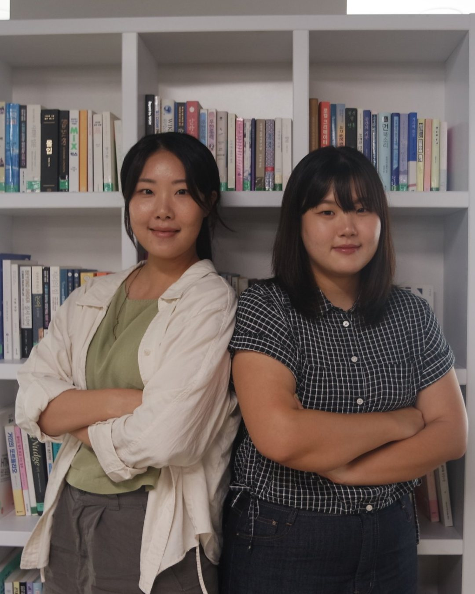
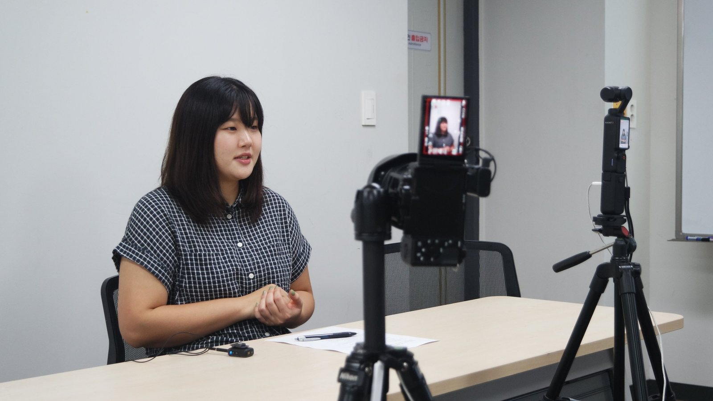
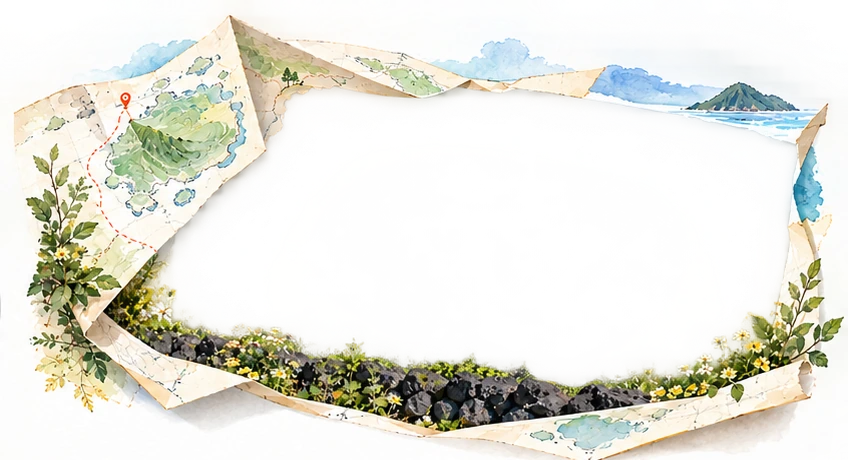

비행기 바퀴가 제주 활주로에 닿을 때, 나는 서울에서의 일상을 떠올리고 있었다. 지하철에 갇혀 출퇴근하던 날들. 충남 금산의 별무리학교를 졸업하고 서울에서 일하던 내게 제주행은 단순한 여행이 아니었다.
“이 시대에 필요한 교육을 제주에서 다시 시작해보자.”
— 은사님의 제안
은사님의 제안에 망설임 없이 짐을 쌌다. 아이들이 삶의 문제를 직접 발견하고 해결해나가는 배움터를 만들고 싶었다.
뜻을 모은 서른네 가정이 조천읍 함덕에 부지를 함께 마련했다. 우리는 2027년 개교를 목표로 이곳에서 학교 설립을 준비하고 있다.
한 달 살기 방을 옮겨 다니며
학교를 준비하는 일과 함께, 제주에서 내 생활의 자리를 마련해야 했다. 설립 초기라 형편이 넉넉하지 않았다. 집값은 생각보다 비쌌고, 1년 치 방세를 한 번에 내는 ‘연세’는 특히 부담스러웠다.
목돈이 없어 캐리어를 끌고 ‘한 달 살기’ 단기 숙소를 옮겨 다녔다. 육지에서 쓰던 부동산 앱에서는 마땅한 집을 찾지 못했다. 지역 정보지인 ‘오일장신문’을 뒤적이고 발품을 판 끝에 머물 곳을 구했다.
도심이 주던 자극과 새로운 공간이 문득 그리울 때도 있다. 온라인으로 1만 원짜리 물건을 사면서 추가 배송비로 5천~6천 원을 내야 할 때면 여전히 헛웃음이 나온다.
제주에 자리를 잡는 일은 집을 구하고, 생활비를 감당하고, 익숙했던 편리함과 거리를 두는 일이기도 했다.
학교를 준비하며 배운 관계의 힘
학교 설립 과정에도 낯선 일이 많았다. 관공서에 서류를 내고 부지를 알아보는 일이 내 생각만큼 빠르게 진행되지 않아 답답했다.
시간이 지나면서 학교를 함께 준비할 사람들과 신뢰를 쌓는 일이 얼마나 중요한지 알게 됐다.
제주 현지의 건축사와 설계사를 직접 찾아가 우리가 만들고 싶은 학교의 모습을 이야기했다. 지역 어른들을 학교 협동조합의 이사로 모시며 먼저 손을 내밀었다. 서로 알아가고 학교의 뜻을 나누면서, 준비하는 일도 조금씩 풀려갔다.
학교를 세우려는 마음만큼이나 이곳에서 함께 살아갈 사람들을 만나고 관계를 맺는 일이 중요했다. 나 역시 그 과정을 통해 제주에 자리를 잡아가고 있었다.
섬 전체를 교실로 삼는 배움
내가 준비하는 수업은 칠판과 네모난 교실의 경계를 넘어선다. 1년을 네 계절로 나누고, 깊이 탐구하는 ‘다이브’와 현장으로 나아가는 ‘웨이브’ 모듈로 배움의 과정을 짠다. 제주의 땅을 교과서 삼아 아이들과 배우고 싶다.
산굼부리에서 화산섬의 지형을 직접 살펴보고, 성이시돌목장과 금능 해변을 찾아 배우는 수업을 구상한다. 제주 자전거 일주도 준비하고 있다. 그 여정이 아이들이 공동체를 배우는 경험이 되기를 바란다.

나는 아이들이 세상으로 나아갈 수 있도록 다양한 경험을 준비하고, 곁에서 성장을 돕는 교사가 되고 싶다. 아이들이 스스로 문제를 발견하고 해결해보는 과정에 함께하는 조력자가 되고 싶다.

[영상 제목] · YouTube에서 보기함께 살아갈 사람들 곁에서
제주 이주를 고민하는 사람들에게 나는 공동체를 찾고, 지역 사람들에게 먼저 다가가보라고 말한다. 내게도 함께 학교를 준비하는 사람들과 지역에서 맺은 관계가 제주에 자리를 잡는 힘이 됐다.
생활의 불편함을 느끼는 순간에도 창문을 열면 제주의 자연을 마주한다.
이곳에서 아이들과 일궈갈 내일을 생각하면, 내가 제주로 온 이유를 다시 떠올리게 된다.
서울에서 지하철로 출퇴근하던 나는 이제 조천에서 아이들과 함께할 배움터를 준비한다. 우리가 만들고 싶은 학교의 모습을 나누며, 그곳에서 함께 배울 날을 기다리고 있다.
안세은 선생님이 그리는 섬 교실
산굼부리에서 성이시돌목장, 금능 해변까지. 섬 안의 사진을 옆으로 넘겨 보세요.


01. 산굼부리
바람 따라 펼쳐지는 제주의 자연
드넓은 억새밭과 신비로운 분화구가 어우러진 제주의 대표 자연 명소. 계절마다 달라지는 풍경 속에서 제주의 고요함과 아름다움을 온전히 느낄 수 있는 곳입니다.